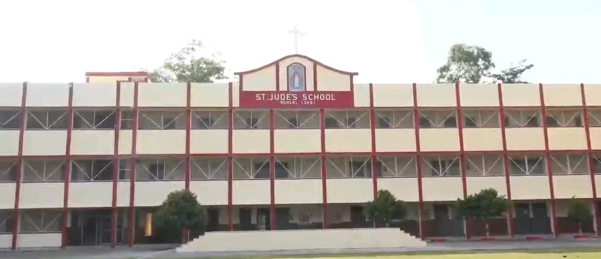

About Our School
 ST.JUDE'S SCHOOLSt. Jude's School is an unaided English Medium School established and administered by the Catholic Diocese of Lucknow, a registered society. It was founded in 2014 with the object of imparting modern education to Catholic Students in a manner that will conserve their "religion, language and culture," but admission is not denied to students professing other faiths.
AIM OF THE SCHOOL
The School aims at the integral and personal formation of young children by giving them an education which is morally, mentally and spiritually sound. The School encourages the students to keep their ideals high and to strive for excellence in every field. It endeavours to inculcate in them the value of freedom and its judicious use, respect for law and order and also teaches them to abide by moral principles, to be unselfish in the service of their country and fellowmen.
Who We Are?
Our institution stands on the foundation of discipline, integrity, and holistic development. For decades, we’ve delivered a structured learning ecosystem that empowers students to engage, achieve, and excel. We drive academic rigor while honoring the traditions that shaped our journey.
Our Mission?
We aim to cultivate well-rounded individuals equipped with knowledge, values, and life skills. Our mission is straightforward: deliver quality education that stands the test of time and prepares students for tomorrow’s opportunities.
Our Vision?
We envision a future-focused community where learners think critically, act responsibly, and grow into leaders who contribute meaningfully to society.
Why Choose Us?
- Experienced and dedicated faculty
- Safe and supportive learning environment
- Balanced focus on academics and extracurriculars
- Strong moral and cultural foundation
- Consistent track record of exceptional results